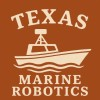
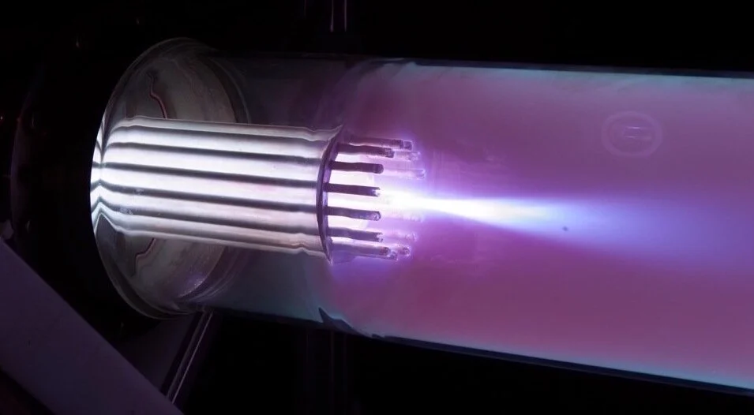
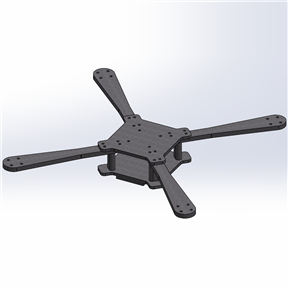
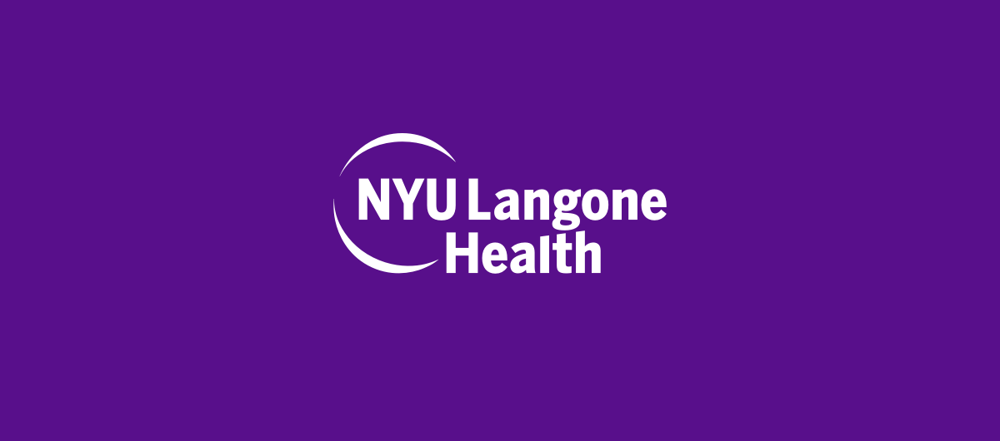

Projects
Work I’ve done
Research, industry, team, and personal engineering work: marine robotics, propulsion hardware, healthcare AI, and more.
SuperDial
Healthcare AI operations and Python/SQL tooling
Open Project
Texas Marine Robotics
Mechanical design for an autonomous surface vessel
Open Project
Underwood Laboratory
Air-breathing thrusters for very low Earth orbit
Open Project
Custom FPV Quadcopter
A personal build: propulsion, electronics integration, and flight tuning
Open Project
NYU Langone Health
Redlining, air pollution, and cardiovascular risk
Open Project